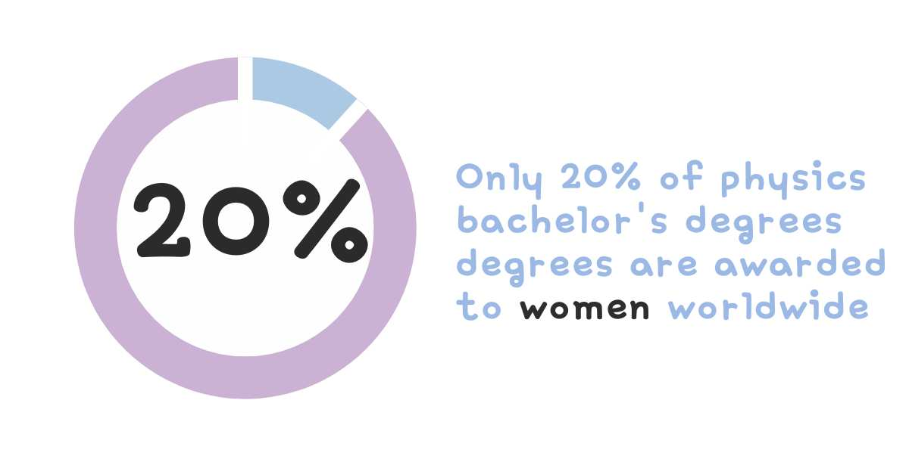

What is
Physics?
Physics is the fundamental science that seeks to understand the natural world and the fundamental laws governing it. It is the study of matter, energy, space, and time, and it explores the interactions between these fundamental elements. Physics is often regarded as the most fundamental of all sciences because its principles underpin and connect with other branches of science, such as chemistry, biology, astronomy, and even engineering. Physics is a constantly evolving discipline, and its theories and models change as new experimental evidence and observations come to light. Scientists across the globe continuously conduct experiments and observations to improve our understanding of the natural world. The study of physics not only enhances our knowledge of the universe but also forms the basis for many technological advancements that have transformed our lives. From electricity and magnetism that power our homes to the principles of thermodynamics that drive engines and machinery, physics plays an essential role in shaping the modern world.
Trailblazing Women in Physics
Marie Curie
Marie Curie was a pioneering scientist and the first woman to win a Nobel Prize. She achieved remarkable accomplishments in physics and chemistry. Her groundbreaking research on radioactivity earned her the 1903 Nobel Prize in Physics, and she later won the 1911 Nobel Prize in Chemistry for her discovery of polonium and radium. Additionally, her invention of mobile radiography units during World War I transformed medical care on the battlefield, saving countless lives. Curie's enduring legacy continues to inspire scientists, especially women, to pursue excellence in STEM fields and make significant contributions to scientific progress.
Lise Meitner
The German-Swedish physicist specialised in radioactivity and nuclear physics. With the German chemist Otto Hahn, she led a group of scientists who first discovered the nuclear fission of uranium. The fission process, which splits the atomic nucleus of uranium to release an enormous amount of energy, was the basis for the nuclear weapons developed by the U.S. in World War II. Meitner was the first woman to be appointed full Professor of Physics in Germany before she was forced to flee for Sweden due to Nazi persecution. The 1944 Nobel Prize for Chemistry was solely awarded to her colleague Otto Hahn, many believe unjustly.

Hertha Ayrton
Hertha Ayrton, a British suffragist, physicist, mathematician, and inventor, defied societal norms by excelling in science, technology, engineering, and mathematics during an era when few women had such opportunities. She overcame barriers in a male-dominated field, becoming the first woman to attend the Institution of Electrical Engineers in London in 1884. Ayrton's pioneering research focused on electric arcs, where she made her most significant discovery - the "Ayrton Flute," arising from investigations into electric arc behavior and sand ripples. Her innovative work had practical applications, particularly in improving electric lamp design.
Vera Rubin
Vera Rubin, an eminent American astronomer, revolutionized our understanding of the universe through groundbreaking work on galaxy rotation and dark matter. In the 1960s and 1970s, she observed galaxy rotation curves, providing critical evidence for dark matter's existence. Her meticulous measurements revealed that galaxies behaved differently from expectations based on observable mass, indicating massive unseen dark matter halos influencing their rotation speeds. This discovery fundamentally changed the understanding of the universe's composition and structure, advancing research into the elusive nature of dark matter.
Programs You Can Join